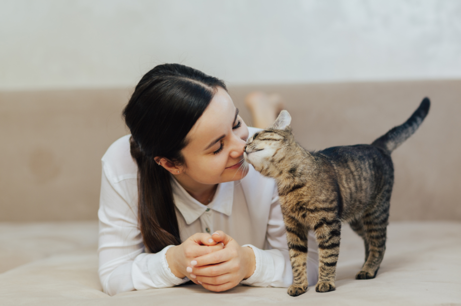

Sesión para comunicarte con tu mascota
Solo se aceptan mensajes.
Terapia de comunicación
Costo cercano: $500.00 MX
Se agenda un día.
Con esta terapia comunicativa podrás conocer a mayor detalle la forma en que tu mascota persive su alrededor, lo que siente, piensa y desea.

Beneficios que tendrías después de la sesión:
Conocer lo que siente física y emocionalmente.
Saber si tu mascota está teniendo algún padecimiento.
Qué quisiera cambiar de su entorno.
Si tuvo algún evento en su vida que le hiciera sufrir, cómo es que lo vivió y ayudarle a sanar.
Mucho más.